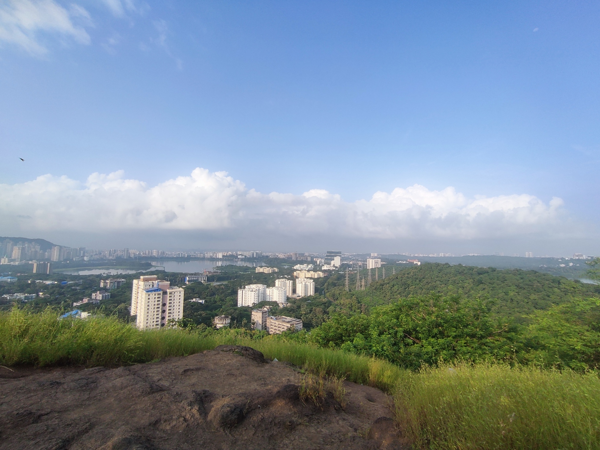
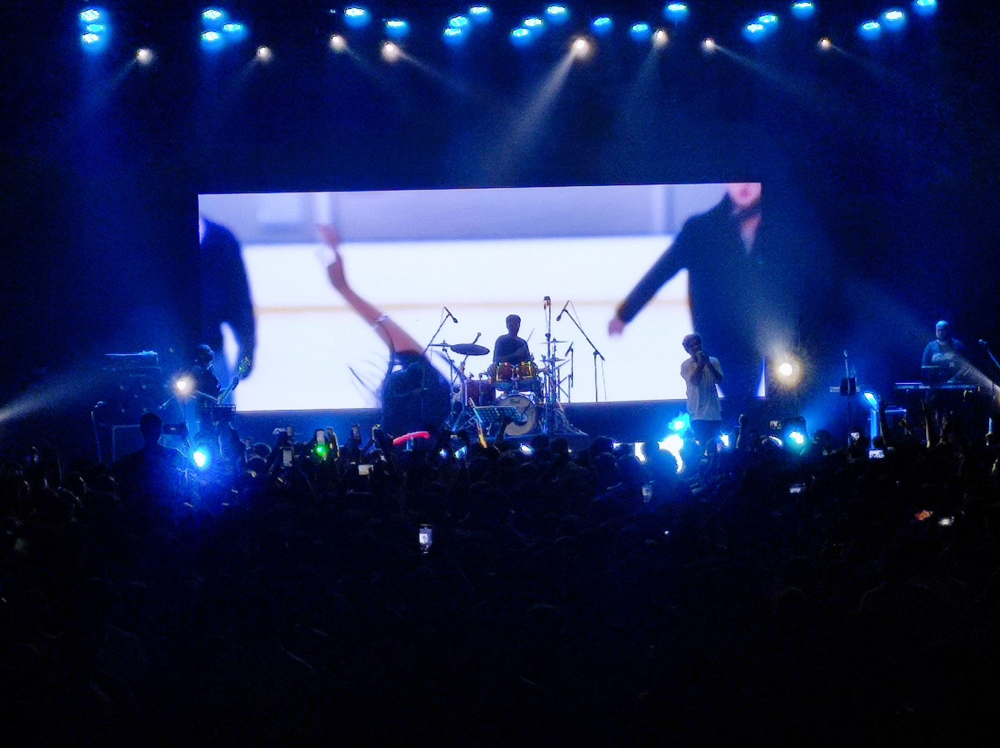
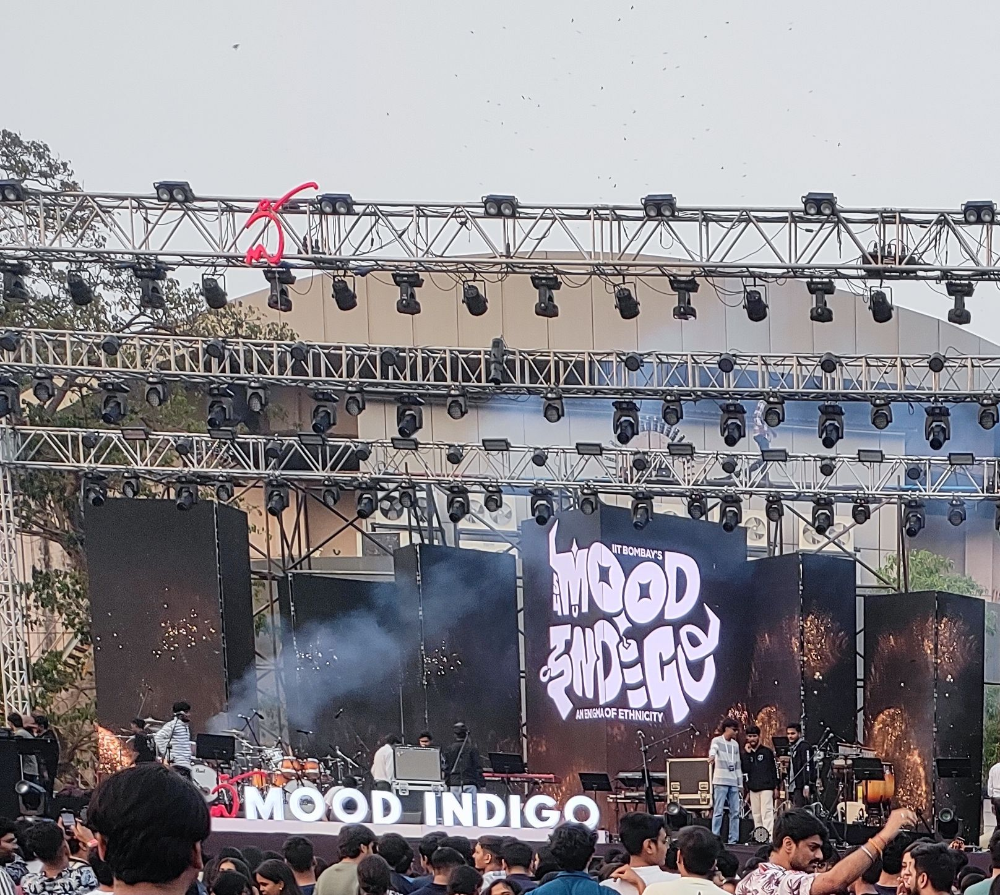
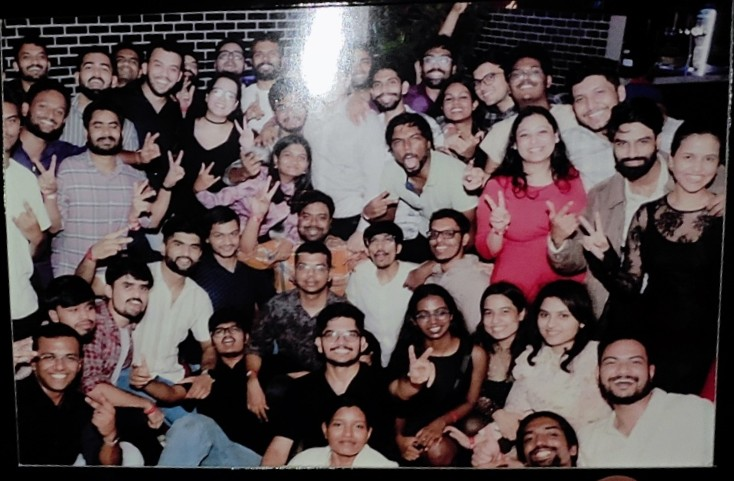

Timeline
July 2024: First day at IITB
Arrived at the lush campus, nervous but excited. Met my hostel mates. Went to Orientation at Convocation hall
August 2024:First Class
Introduction of ourselves to the professors.
September 2024
Teacher's Day celebration and Freshers on the same day

September 2024
Went to Sameer Hill after Mid-sem exams

September 2024
Attended Nikhil D'souza's Concert at old sac.

February 2025
Attended Mithoon's Concert at old sac.

April 2025
Farewell of our seniors

Learnings and Growth
My journey at IIT Bombay has been filled with both academic rigor and personal evolution. Over the semesters, I’ve developed strong technical and analytical skills, expanded my understanding of geospatial systems, and learned how to work across interdisciplinary domains.
Skills
Projects
Academic Stat
- 🛰️ Remote Sensing & GIS
- 🛰️ Digital Image Classification
- 🖥️ Machine Learning and Deep learning
- 🌠Geospatial Web Mapping (Leaflet, GeoServer)
- 🗺️ Disaster Management Mapping
- 🌠Spatial Data Analysis
- ⚒️ Geological Mapping
- ⚒️ Mineral Prospectivity Mapping
- 🐍 Python (Pandas, NumPy, Scikit-learn, Rasterio,Keras)
- 🛰️ Flood Disaster Mapping using remote sensing and GIS tools
- 🌠Web Map Services (WMS/WFS) setup for geodata publishing
- ⚒️ Mineral Prospectivity Modeling using deep learning & geostatistics
- 📘 Credits Completed:
- 🆠Favorite Course: Remote Sensing & GIS Applications